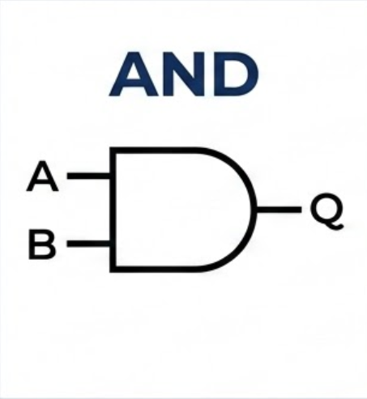

O que são as operações lógicas dentro da Álgebra Booleana?
As operações lógicas dentro da Álgebra Booleana são regras usadas para combinar ou modificar valores lógicos, que só podem ser verdadeiro (1) ou falso (0). Elas servem para analisar condições e tomar decisões em áreas como programação, matemática e circuitos digitais. Essas operações funcionam como “operações matemáticas”, mas em vez de trabalhar com números comuns, trabalham com valores de verdade.
Operadores Lógicos
